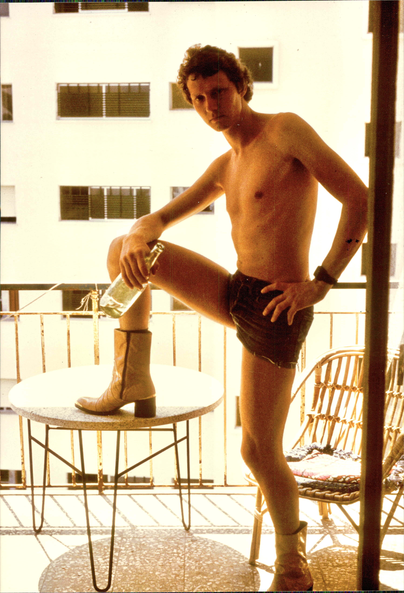

Sommer 1977
Atzes Bierkneipe am Unteren Markt in Morbach war DER Treffpunkt der Morbacher Jugend. Hier kreuzten sich auch die Wege von Gerd und mir wieder. Wir kannten uns noch aus Schulzeiten. Er war der Sohn eines Morbacher Bauunternehmers, aufgeschlossen, großzügig und vor allem: immer für einen Spaß zu haben.
Gerd war ein Charakter. Zu später Stunde schmetterte er auf der Morbacher Kirmes schon mal eine Arie von der Bühne einer Losbude. Den Schausteller hatte er vorher durch den Kauf einiger Lose davon überzeugt, ihm die Bühne zu überlassen. Das war typisch Gerd.
Luigi und ich luden ihn zu einer unserer zahlreichen Partys in der WG nach Krofdorf-Gleiberg ein. Gleich merkten wir: der Mann ist partytauglich! Als wir im Sommer einen Urlaub planten, bot Gerd an, mit uns in seinem Opel Kadett nach Spanien zu fahren. Luigi und ich waren einverstanden. Den Kadett tauften wir auf den Namen „Stracki“ und brachten den Schriftzug am Heck an (Nomen est Omen!).
Das Programm hatten wir festgelegt: tagsüber Strand, abends Diskotheken, Cuba Libre und Mädels kennen lernen.
Unsere erste Station war Lloret de Mar. Schon auf der Hinfahrt stellte Gerd fest, dass sein Fahrstil zu deutsch war. Gleich stellte er auf spanisch um: linken Arm lässig aus dem Fenster hängen lassen, rechte Hand locker am Lenkrad. Und immer hupbereit. In Spanien wird nämlich erst dehupt und dann gebremst. Denn: wer zuletzt hupt, den bestraft das Leben!
Schnell fanden wir eine Ferienwohnung. Der Tagesablauf stand fest: Gegen Mittag aufstehen, frühstücken, an den Strand gehen, Restalkohol abbauen und gleichzeitig Urlaubsbräune anlegen. Gegen Abend zurück in die Wohnung und die Nacht vorbereiten.
Ich war für das Kulturprogramm zuständig. Mit meiner Gitarre saß ich auf dem Balkon und versuchte, möglichst spanisch klingende Musik zu erzeugen. Die Damenwelt sollte schließlich bemerken, wer hier aus Deutschland abgestiegen war.
Danach begann der eigentliche Teil des Tages: herausfinden, wo die besten Diskotheken und die schönsten Mädels zu finden waren. Luigi kam bei den Frauen deutlich besser an als Gerd und ich. Vielleicht lag es daran, dass er weniger Cuba Libre trank.
So ging es weiter in Benidorm und später in Salou. In Benidorm lernte ich eine temperamentvolle Spanierin kennen. Es blieb bei einem harmlosen Urlaubsflirt. Bei Gerd lief es ähnlich.

Meine spanischen Stiefel.
Manchmal gingen wir soweit, unsere Routine kurz zu unterbrechen. Wir gingen auf einen Wochenmarkt. Un da sah ich sie: ein Paar spanische Halbstiefel mit hohem Absatz und Metallbeschlägen! Es war Liebe auf den ersten Blick. Nach zähen Verhandlungen kaufte ich sie. Von da an gehörten sie zu meiner Standardausrüstung.
Eine der Nächte wird mir immer in Erinnerung bleiben. Wir waren in Benidorm, einem scheußlichen Ort, der aber alles hatte was unser Herz begehrte: Strände, Diskotheken und schöne Frauen. Luigi und ich waren bereits in unserem Apartment im 10. Stock. Es war früher Morgen. Gerd war noch nicht da. Plötzlich hörten wir eine Gruppe von etwa sechs gut gelaunten Kneipengängern auf ihrem Heimweg. Sie sangen spanische Lieder und einer - der mit der kräftigsten Stimme - führte sie an. Er gab Kommandos. Auf Spanisch. Als die Gruppe näher kam, erkannten wir den Anführer. Es war Gerd, der außer „Cerveza“, „Cuba Libre“ und „Escalopa“ eigentlich kein Wort Spanisch konnte. Luigi und ich standen auf dem Balkon und kriegten uns vor Lachen kaum ein.
Am Ende hatten Gerd und ich allerdings noch eine Rechnung mit Luigi offen. Aus unserer Sicht hatte er sich bei den Mädels unfaire Vorteile verschafft, indem er weniger Cuba Libre trank als wir. Also beschlossen wir, ihn bei nächster Gelegenheit ordentlich abzufüllen.
Wir waren in Salou und stießen ständig mit ihm an, tranken selbst aber heimlich nur Cola.
Spät kehrten wir auf den Campingplatz zurück.
Vor unserem Zelt lag jemand halb drinnen, halb draußen, alle Viere weit von sich gestreckt.
Es war Luigi.
Zum ersten Mal hatten wir ihn Schachmatt gesetzt.